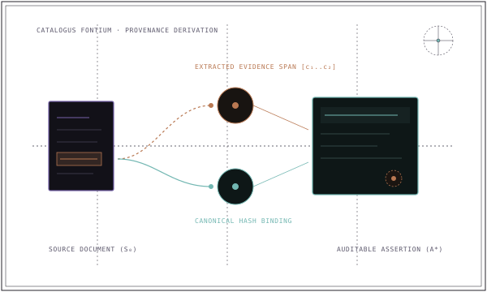

Otonom ajan hafızasında temellendirme krizi#
Çoğu konuşma ve ajan kütüphanesi hafızayı doğrulanmamış bir metin deposu olarak ele alır. LLM konuşmayı gözlemler, 'Müvekkil revize sözleşme şartlarını onayladı' gibi bir özet çıkarır ve bu cümleyi veritabanına kaydeder.

- Kanıt Odaklı Hafıza (Evidence-Aware Memory)
- Bilgi iddialarının bağlamsız cümleler olarak var olamayacağı; kabul edilen her kaydın köken kaynağına, kesin kanıt aralığına ve yetki sınırlarına yapısal olarak bağlandığı hafıza mimarisi.
Kanıt odaklı hafızanın beş temel unsuru#
Gerçek anlamda kanıt odaklı olabilmesi için geri çağrılan her hafıza kaydı beş soruyu yanıtlamalıdır:
- 1. İddia (Proposition): Olgusal iddia veya bağıntı (örneğin
(Dosya 402, durum, AÇILDI)). - 2. Kaynak Kimliği (Source Identity): Belgenin veya işlemin değiştirilemez URI'si, kriptografik özeti (hash) veya resmî sicil kimliği.
- 3. Kanıt Aralığı (Evidence Span): Kaynak belge içinde destekleyici metni barındıran kesin karakter veya bayt aralığı
[c_başlangıç..c_bitiş]. - 4. Kapsam Sınırları (Scope Bounds): Bu iddiaya hangi tenant, workspace, ajan ve zaman penceresinin erişebileceğini tanımlayan güvenlik sınırı.
- 5. Yaşam Döngüsü Durumu (Lifecycle State): Kaydın denetlenebilir durumu (
COMMITTED,PENDING_REVIEW,SUPERSEDEDveyaRETRACTED).
Gelişigüzel hafıza ile kanıt odaklı hafıza karşılaştırması#
Gelişigüzel metin hafızası ile kanıt odaklı hafıza arasındaki fark, verinin yürütüm için nasıl modellendiğinde açıkça görülür:
// Gelişigüzel metin hafızası (kaynağı izlenemez)
{
"memory": "Müvekkil uyuşmazlığın Zürih'te ICC kurallarına göre çözülmesini istedi."
}
// Kanıt odaklı hafıza assertion'ı (MESA paradigması)
{
"assertion_id": "asrt_88b14a2",
"statement": {
"subject": "Sozlesme_2024_09",
"predicate": "tahkim_sarti",
"object": "ICC_Zurih"
},
"source": {
"source_id": "sozlesme_v2.pdf",
"sha256": "e3b0c44298fc1c149afbf4c8996fb92427ae41e4649b934ca495991b7852b855",
"evidence_span": [4120, 4285],
"quoted_text": "İşbu sözleşmeden doğan tüm uyuşmazlıklar Milletlerarası Ticaret Odası Tahkim Kuralları uyarınca Zürih'te nihai olarak çözümlenecektir."
},
"scope": {
"tenant_id": "tenant_hukuk",
"workspace_id": "dosya_402",
"valid_from": "2024-09-01T00:00:00Z"
},
"status": "COMMITTED"
}Kanıt odaklılık kritik alanlarda neden zorunludur?#
Hukuk, tıp, regülasyon ve finans alanlarında otonom ajanlar kullanıcılardan 'kendilerine güvenmelerini' isteyemez. Her iddia denetlenebilir olmalıdır:
| Alan | Gelişigüzel Hafızanın Hata Modu | Kanıt Odaklı Güvenlik Ağı |
|---|---|---|
| Hukuk Yapay Zekâsı | Var olmayan emsal kararlar veya mülga kanun maddeleri atfetme | Resmî gazete sayısını, madde numarasını ve doğrulama izini bağlar (bkz. MESA Law) |
| Tıbbi Kararlar | Eski hasta dozaj talimatlarına güvenme | Zamansal kapsamı zorunlu kılar ve iddiayı hekim notunun tam zaman damgasına bağlar |
| Finansal Denetim | Taslak bütçe tahminlerini onaylanmış rakamlarla karıştırma | İmzalı işlem özetleri ve yetkilendirme kapsam doğrulaması gerektirir |
| Çoklu Şirket (SaaS) | Şirket stratejisini workspace sınırlarının dışına sızdırma | Çapraz veri sızıntısını önlemek için geri getirme öncesi sıkı tenant filtrelemesi uygular |
Genel kavram ile MESA'nın uygulaması#
Kanıt odaklı hafıza genel bir kavram olarak farklı yazılım mimarilerinde uygulanabilir. Önemli olan, iddiaları geri çağırmadan önce doğrulanabilir kaynaklara bağlama ilkesidir.
MESA Core içinde bu ilke veritabanı seviyesinde uygulanır: SQLite; assertion'ların, kanıt aralıklarının ve kapsamların kanonik deposudur. Arama projeksiyonları (vektörler için LanceDB, grafikler için Kùzu) verilerini doğrudan bu kanonik kayıtlardan türetir. Kanıtın sistemde nasıl aktığını MESA Nasıl Çalışır sayfasında görebilirsiniz.